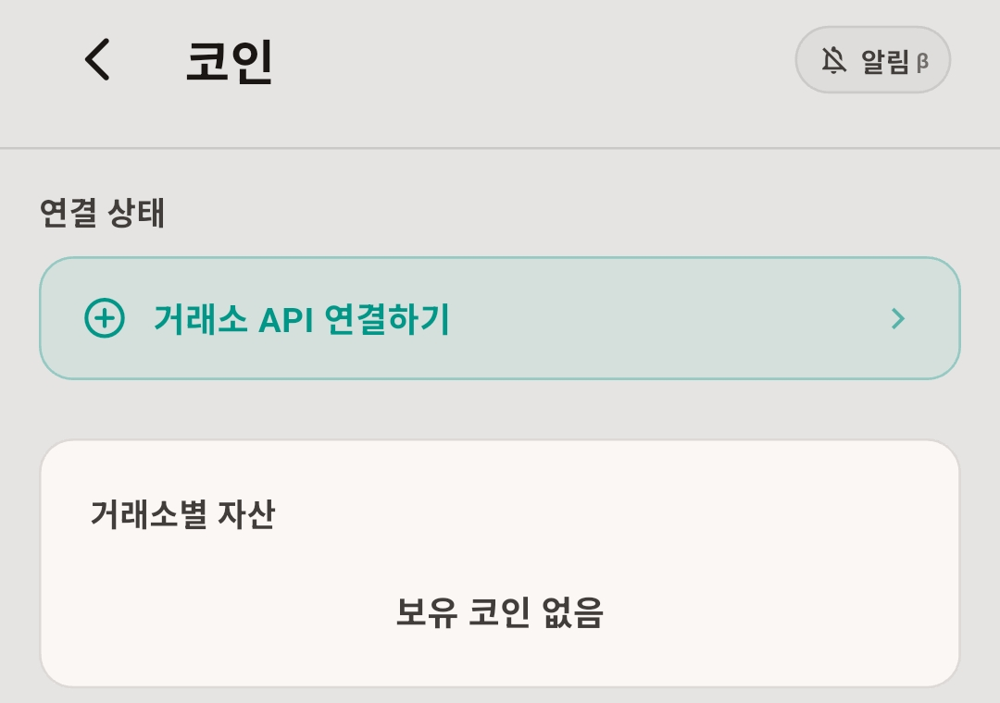
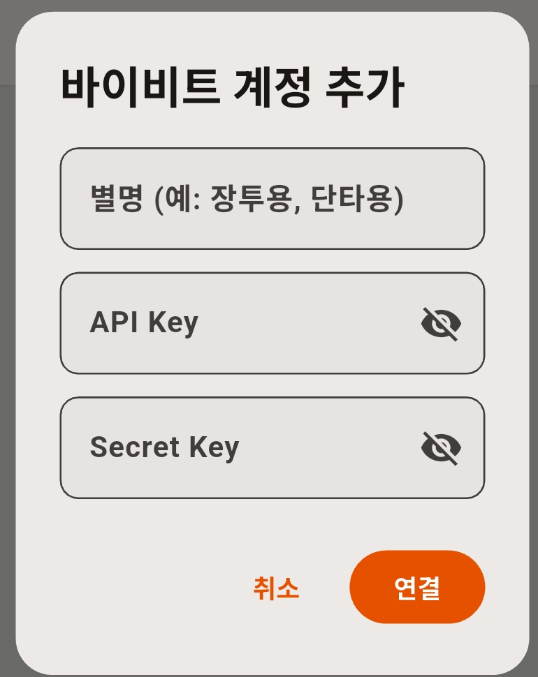
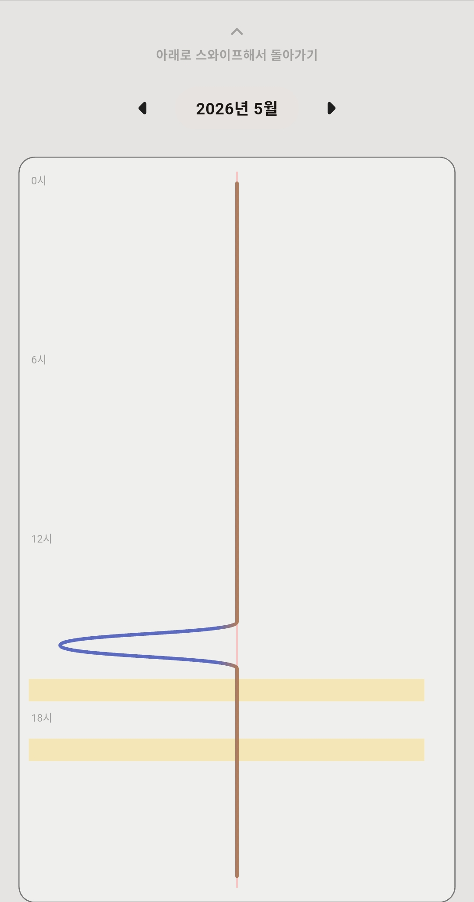
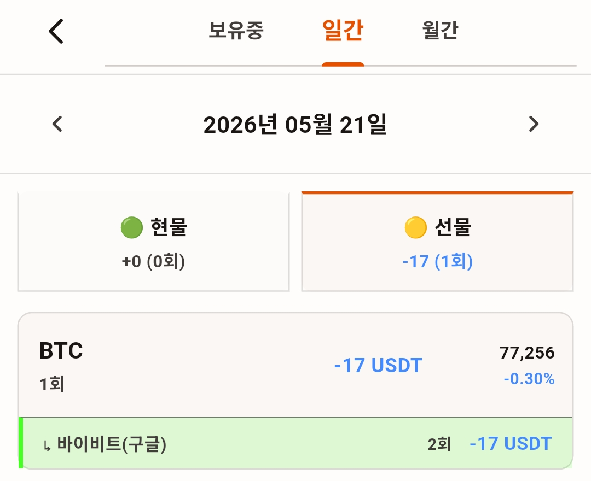
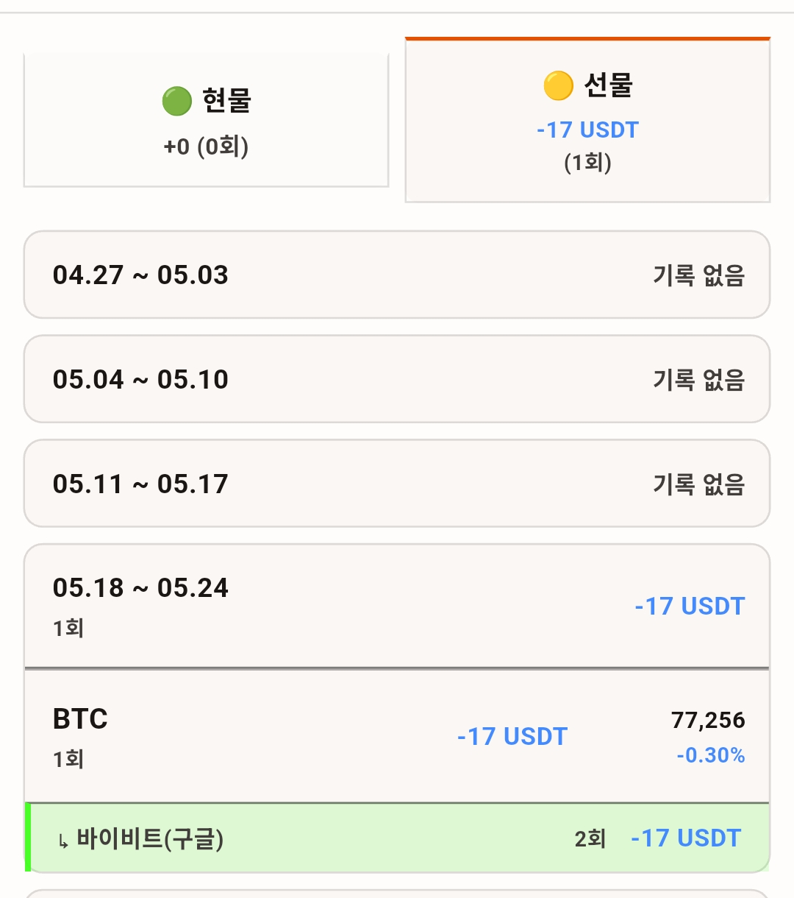
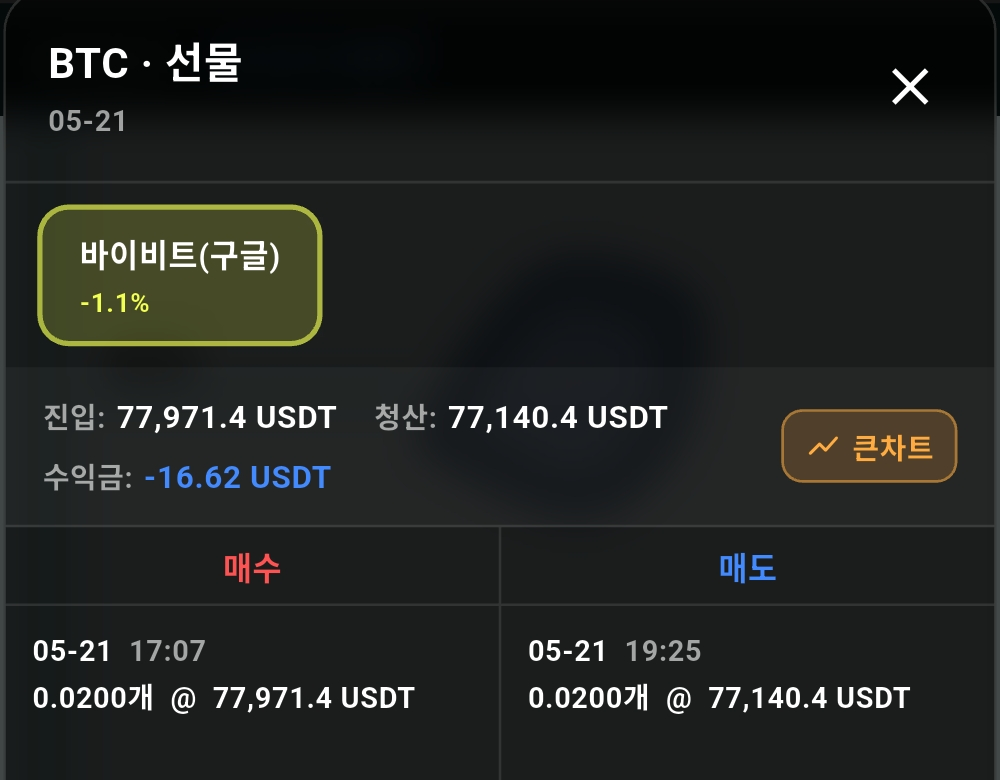
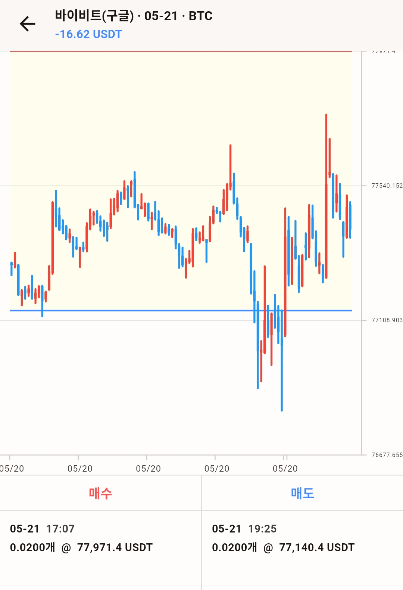
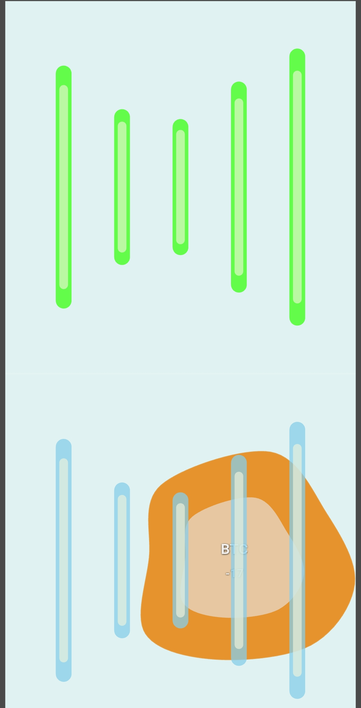
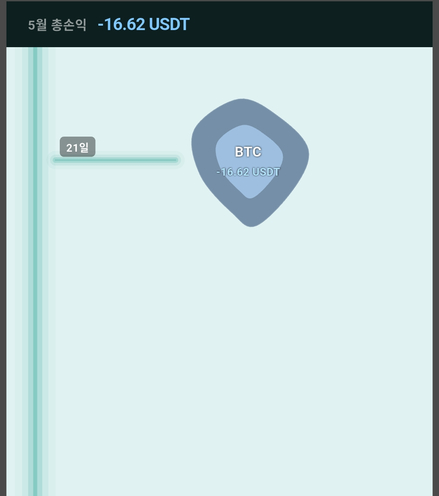

거래소만 연결하면, 코인 매매도 포핏이 기록해요 🐾
To the moon은 거래소 API로 코인 매매를 가져와 기록해요. 가장 먼저 거래소를 연결해 주세요.

거래소 API 연결하기를 누르고 지원 거래소 목록에서 쓰는 거래소를 고르세요. 별명(예: 장투용, 단타용)과 API Key · Secret Key를 넣으면 연결 끝. 키는 각 거래소 사이트에서 쉽게 발급받을 수 있어요.

오른쪽 위 알림 β 버튼을 누르면 베타 기능 안내가 떠요. "사용하시겠습니까?"에 예를 누르면, 폰에 오는 코인 알림도 함께 기록합니다.
가운데에는 거래소별 자산과 투자 유형별 분포가 나와요(연결 전에는 비어 있어요). 화면을 위로 스와이프하면 분석 페이지 — 수익 곡선과 함께, 내가 어느 시간대에 거래를 많이 하는지 막대그래프로 보여줍니다.

보유중 · 일간 · 월간 세 화면이고, 현물과 선물은 페이지가 따로 운영돼요. 화면 위 현물/선물 탭으로 전환합니다.

같은 BTC라도 거래소(계정)별로 따로 나와요. 금액 단위는 환산하지 않고 입력된 그대로의 가격(USDT면 USDT)을 씁니다.

목록의 항목을 누르면 상세 내역이 떠요 — 진입·청산 가격, 수익금, 그리고 매수·매도 기록이 시간순으로 나옵니다.

큰차트를 누르면 차트로 이어져요. 여기서는 손익이 구간 표시로 칠해집니다 — 수익이었는지 손실이었는지 구간 색으로 한눈에 보여요. 코인은 FIFO 방식(먼저 산 것부터 차례로 정산)으로 계산되기 때문에, 매매 지점 하나하나가 아니라 구간으로 보는 게 정확하거든요.

시각화도 현물/선물을 나눠서 봐요. 상단에서 전환하고, 거래소별 필터도 있어요.

그날 청산한 매매가 두 줄로 흘러가요 — 윗줄은 수익, 아랫줄은 손실. 블롭을 누르면 상세 내역이 뜹니다.

월간은 타임트리 방식이에요. 세로 줄기를 따라 거래가 있던 날에만 가지가 뻗고, 끝에 코인 블롭이 달립니다. 블롭을 누르면 상세 내역으로, 위쪽 필터로 거래소별로 골라 볼 수 있어요.
참고로 코인 시각화에는 포핏의 시선 기능은 없어요.